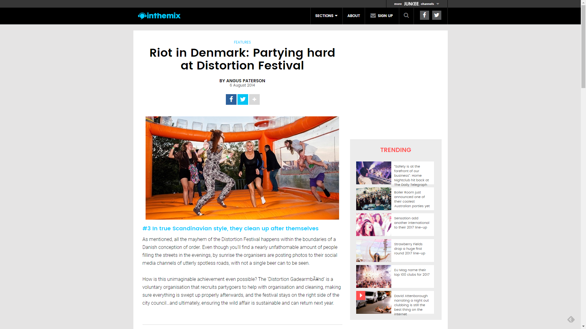

Riot in Denmark: Partying hard at Distortion Festival
{kind=link}

In the summertime, the Danish capital of Copenhagen is among the most beautiful cities in the world. The deep blue northern skies add a serene glow to the perfect straight lines of the city streets as the impeccably dressed locals commute elegantly on bicycles. Coincidentally, summer is also the time when one of Europe’s most orderly societies decides to throw all common sense to the wind and hit the streets to get really, really wild for a few days.
The annual Distortion Festival is aptly described as “a week of emerging dance music and orchestrated chaos.” As many as 300,000 partygoers storm the streets for a series of sprawling parties, conjuring the kind of exhilarating energy you’d expect from a wide-scale act of revolution.
Not that there’s much to revolt against in Denmark. The serene vibes are largely thanks to some of the world’s best living conditions in terms of universal healthcare, education, etc. Danes have a rock-solid sense of community and mutual obligation; which is surely part of the reason they’re able to hit the streets in stupendous numbers, drink an unfathomable amount of Carlsberg Beer, party like wild animals, and then clean everything up impeccably afterwards. After a week of partying Danish-style at Distortion, here are five things we learnt.
#1 The Danes know how to take it to the streets in style
Copenhagen is, generally, a blissfully beautiful city defined by its impeccable sense of order. And it’s that same sense of order that contrasts so perfectly with the chaos that comes with the massive street parties during Distortion week. Tens upon thousands of the city’s young ‘Copenhipsters’ spill out into the streets at any one time, and you’re entertained by nearly 50 different stages and soundsystems during the two main evenings of street events.
The first big party is on Wednesday and takes place in the Nørrebro district. It’s the more modest of the two street events, beginning at the bridge that crosses the picturesque Søerne lake and crisscrossing through the narrow streets in every direction, with a range of smaller stages playing an eclectic and varied mix of house, electro, hip hop and beyond.
However, it’s the Thursday night party in the Vesterbro district that truly has a sprawling feel: a street gathering that’s epic in scope. The main Søndreboulevard street in particular stretches as far as the eye can see, teaming with an unprecedented amount of people, with each street intersection hosting a different soundsystem.
As you might expect, the vibe is electric, offering an altogether different sense of scale and collective euphoria than what you’d ever get at a typical festival in a convention hall. Distortion really offers its own unique brand of revolutionary excitement.
#2 They keep the party going all night
In line with the oh-so-Danish notion of playing by the “rules”, the street parties are concluded and politely packed up at the sensible time of 10pm. If you’re keen to continue partying all night, though, in the more conservative setting of a nightclub, then you are well catered for.
The music at the street parties is a sporadic affair, with the focus definitely on the excitement that comes from having so many people on the streets. However, the evening gigs take over some of Copenhagen’s finest clubs to offer a much more focused musical affair.
You want techno? Legowelt and Cosmin TRG took over Culture Box on Thursday night, while Boys Noize and Skream threw down tough disco at Klatrehallen on Friday night. Want rip-roaring drum’n’bass and dubstep? Noisia provided the thunder at Pumpehuset that same evening. And this was just the tip of the iceberg of a week-long schedule of party options.
#3 In true Scandinavian style, they clean up after themselves
As mentioned, all the mayhem of the Distortion Festival happens within the boundaries of a Danish conception of order. Even though you’ll find a nearly unfathomable amount of people filling the streets in the evenings, by sunrise the organisers are posting photos to their social media channels of utterly spotless roads, with not a single beer can to be seen.
How is this unimaginable achievement even possible? The ‘Distortion Gadearmbånd’ is a voluntary organisation that recruits partygoers to help with organisation and cleaning, making sure everything is swept up properly afterwards, and the festival stays on the right side of the city council…and ultimately, ensuring the wild affair is sustainable and can return next year.
4 They know how to bring things to a rocking close
While the street parties are all wrapped up by the end of the week, on Saturday night there’s a spectacular ‘Final Party’ to bring Distortion to an appropriately ravey and over-the-top close. Though it’s more of a traditional festival event, the combination of a unique location, attention to detail and great line-up means that it’s a party good enough to compete with the likes of Exit Festival in Serbia and Melt! in Germany.
The ‘Final Party’ takes place is an abandoned shipyard in the heart of the Copenhagen harbor: the ideal setting for an all-night rave. You’ll be partying in converted rock-climbing centres, squeezing into shipping containers that are rattling with the full force of steely techno, and feeling the wind in your hair at the huge amount of open-air stages on the water’s edge. Fireworks go off overhead, and lasers light the sky. Big fun.
There’s also a world-class assortment of DJ talent providing the tunes: musically, it’s the most focused event of the entire Distortion Festival. A few of the treats this year were: Ten Walls dropping their anthemic Gotham to a backdrop of coloured lights reflecting over a rock-climbing wall, as punters swung from harnesses above; Brodinski throwing down the party tunes with plenty of rumbling trap bass at the open-air mainstage; and DVS1 wholeheartedly rattling the walls of the aforementioned shipping container. Overall, there are so many different stages and options you’ll get lost until the sun comes up.
#5 On Sunday, the Danish get all ‘hygge’ up in this place
‘Hygge’ is the Danish word for ‘coziness’, and it’s a state of mind that’s central to their character (a clever way of coping with the bitterly cold Scandinavian weather that keeps them indoors for much of the year). Naturally, they’ve found a way to integrate it with the otherwise manic nature of the Distortion Festival. On Sunday, everyone looking for the opportunity to wind down gathers in the green surrounds of Ørstedsparken for some chilled sounds and relaxation. Normality returns…for the next 12 months, at least. [Photos by Jacques Holst, Kasper Mansson, Helena Lundqvist, Thorbjorn Fessel.]